- Armatex
- Złączki na wcisk
- Trójnik T24
Trójnik Tectite T24
Trójnik z linii Tectite Classic: 8 rozmiarów (10mm – 28mm). Zastosowanie: woda, CO · rury miedziane, PEX, PB. Mosiądz DZR, system demontowalny. Rury PEX i PB łączy się z tulejką.
- Rozmiary
- 8
- Ciśnienie
- 16 bar (miedź), 12 bar (PEX, PB)
- Temperatura
- −24…95 °C z miedzią
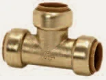
Rozmiary i numery artykułów
Źródło: katalog Tectite 2026| Rozmiar | Nr artykułu | Ilość do zapytania |
|---|---|---|
| 10mm | 45660 | |
| 12mm | 45662 | |
| 15mm | 45666 | |
| 16mm | 45668 | |
| 18mm | 45670 | |
| 20mm | 45674 | |
| 22mm | 45676 | |
| 28mm | 45678 |
- Linia
- Tectite Classic
- Zastosowanie
- woda, CO · rury miedziane, PEX, PB
- Aprobaty
- WRAS PZH
Zapytaj o wycenę: Trójnik T24.
Dodaj rozmiary do listy przyciskiem „Dodaj” albo od razu napisz do nas. Ceny hurtowe, dostępność i terminy przygotujemy w ciągu jednego dnia roboczego.
Inne produkty w linii
Wszystkie linie systemu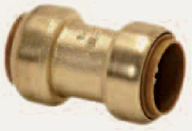
Złączka prosta T1 · 8 rozm.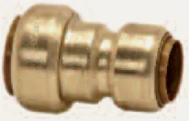
Złączka redukcyjna T1R · 10 rozm.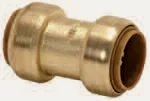
Złączka ślizgowa T1S · 5 rozm.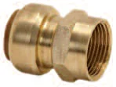
Redukcja GW T2 · 15 rozm.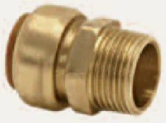
Złączka GZ T3T · 13 rozm.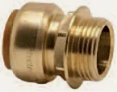
Redukcja GZ T3P · 11 rozm.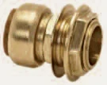
Redukcja GZ T5 · 3 rozm.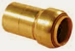
Redukcja T6 · 10 rozm.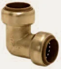
Kolano T12 · 8 rozm.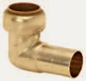
Kolano T12S · 7 rozm.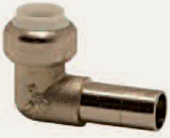
Kolano T12SNP · 3 rozm.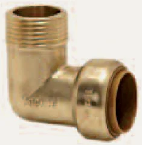
Kolano GZ T13 · 11 rozm.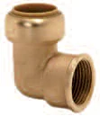
Kolano GW T14 · 11 rozm.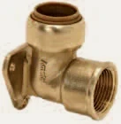
Kolano GW z łapami TT15 · 7 rozm.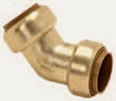
Kolano 45 st. T21 · 6 rozm.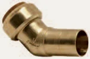
Kolano 45 st. T21S · 6 rozm.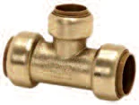
Trójnik redukcyjny T25 · 12 rozm.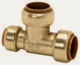
Trójnik redukcyjny T26 · 6 rozm.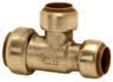
Trójnik redukcyjny T27 · 6 rozm.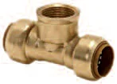
Trójnik redukcyjny GW T30 · 5 rozm.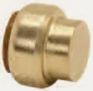
Kapa T61 · 8 rozm.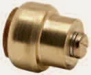
Kapa T61RV · 6 rozm.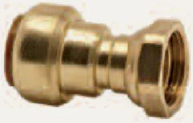
Redukcja GW ruchoma T62 · 4 rozm.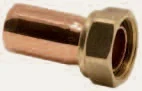
Złączka GW ruchoma T62S · 3 rozm.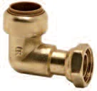
Kolano GW ruchome T63 · 4 rozm.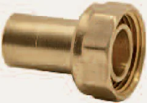
Złączka GW TX68S · 1 rozm.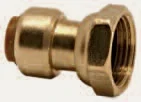
Adapter śrubunkowy T68FF · 4 rozm.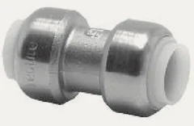
Złączka prosta (chrom) T1CP · 3 rozm.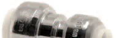
Złączka prosta (chrom) T1RCP · 3 rozm.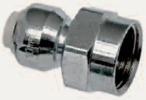
Złączka GW (chrom) T2CP · 6 rozm.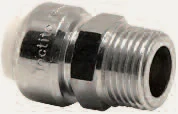
Złączka GW (chrom) T3TCP · 6 rozm.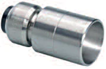
Redukcja (chrom) T6CP · 3 rozm.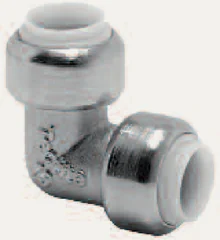
Kolano (chrom) T12 · 3 rozm.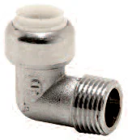
Kolano GZ (chrom) T13CP · 5 rozm.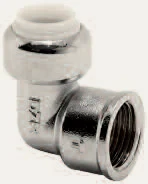
Kolano GW (chrom) T14CP · 5 rozm.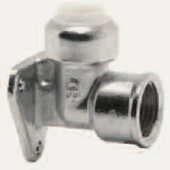
Kolano GW z łapami (chrom) T15CP · 3 rozm.Trójnik (chrom) T24CP · 3 rozm.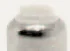
Trójnik redukcyjny (chrom) T25CP · 3 rozm.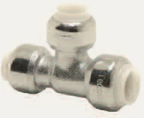
Trójnik redukcyjny (chrom) T27CP · 1 rozm.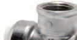
Trójnik redukcyjny (chrom) T30CP · 1 rozm.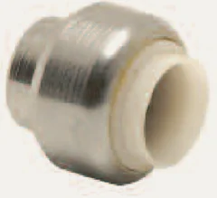
Kapa (chrom) T61CP · 2 rozm.